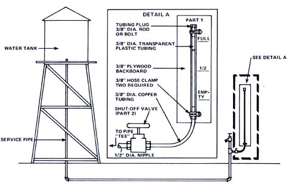

Determining how much water I had in my water tank used to be a real chore (what with having to climb the tower in order to peer through the tank's manhole) ... until I devised a painless-yet accurate-way to check the container's water level while I stood on the ground.
The answer? A simple sight gauge which uses the compression of air in a length of clear plastic tubing as an indication of water pressure ... which-in turn-is nothing but a ref lection of the tank's water capacity.
The accompanying drawings will give you an idea of how the system is set up. As you can see, there's nothing complex about the gauge's construction (I built mine in two hours at a total parts cost of less than ten dollars ... and I'm sure you can do the same). About the only slightly thorny part of the whole project is the calibration of the sight-tube ... and even that's a snap when you know how.
[1] First of all-with the plug (Part 1) removed from the top of the transparent plastic tube-open the shut-off valve (Part 2) just a crack, until the water level is visible near the bottom of the sight gauge. Close the valve, replace the plug, and tighten the top hosing clamp until air will no longer escape past the end plug. (Hint: Some air loss is virtually inevitable, but you can cut that loss to an absolute minimum by giving the tubing plug a light coat of very thick grease prior to installing it for the last time.)
[2] Drain the tank ... but not the service pipe. Now open the shut-off valve and you'll see the water level rise in the plastic tube as a result of the head pressure created by the water remaining in the service pipe. Mark the position of the meniscus, or water level, on the plywood backboard and label this spot "TANK EMPTY". (Leave the shut-off valve open from now on.)
[3] Next, fill the water tank brim full. Then mark the position of the meniscus on the backboard and label the spot "TANK FULL".
[4] Find the midpoint between the "TANK FULL" and "TANK EMPTY" lines and mark this locus -1/2 FULL". Make as many other subdivisions of the scale as you feel necessary. That's all!
The usefulness of this gauge is not limited to water tank systems alone. It can also be used to measure city water pressure, and-by acting as a pressure-overload damper-can even cure water hammer problems.
In addition, if you have your own water pump, the makeshift pressure indicator can help you detect pump failures, line breaks, or even a drop in the water table (should this affect your pump's pressure output).
In MOTHER NO. 39, Richard Hilton told you how to erect your own backyar water tower. Above, Jim Amdal explains a method that will allow you to measure-easily and accurately-the amount of water that your big elevated storage tank contains. The project, says Jim, should cost you no more than $10 and two hours.
|
 |
|
|